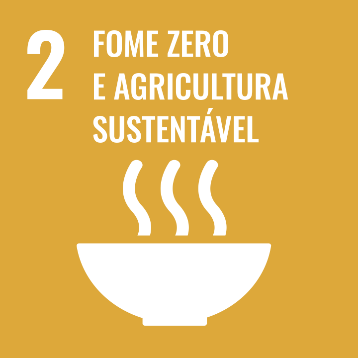
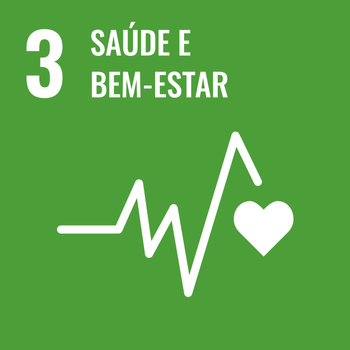
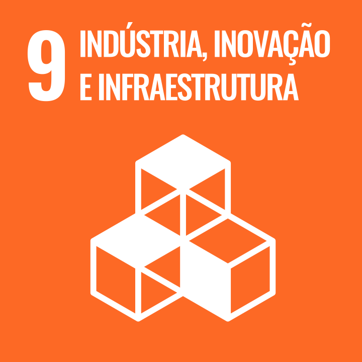
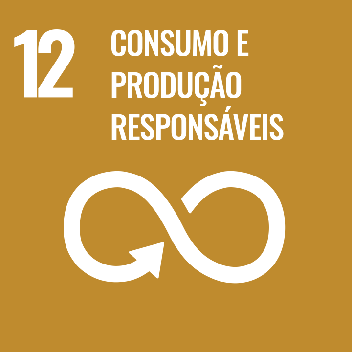
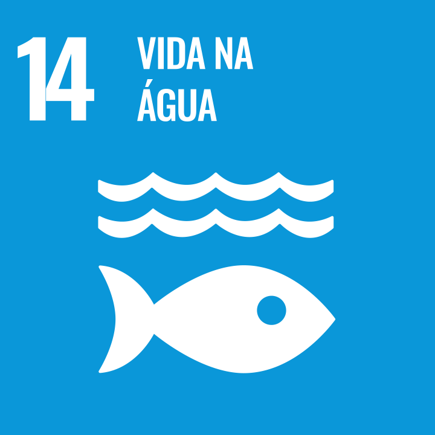
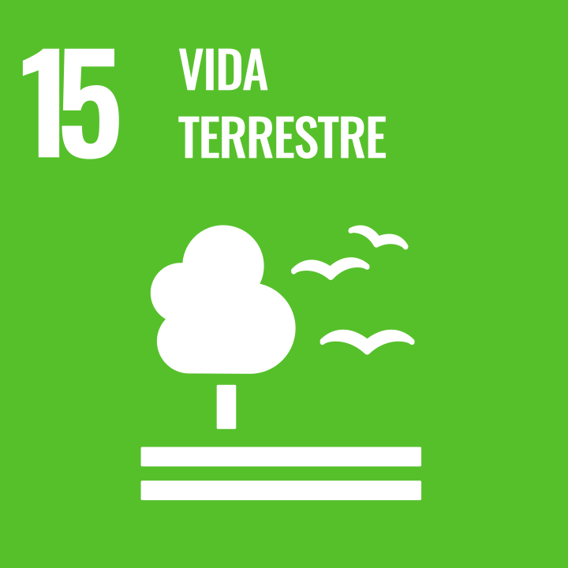
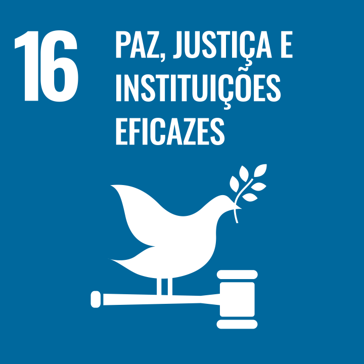
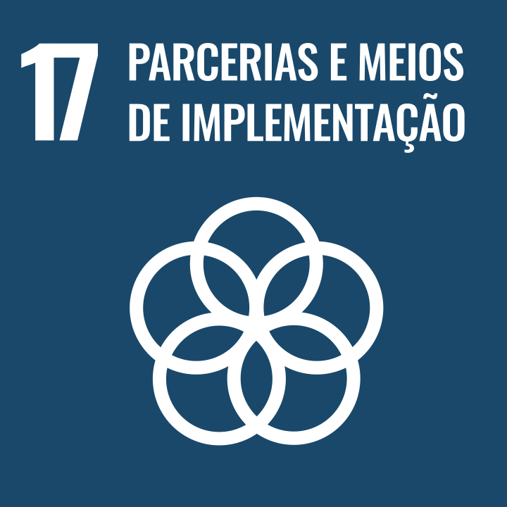

Objetivos de Desenvolvimento Sustentável
-

- 
- 
-

-

-

-

-

- 
-

-

- 
-

- 
- 
- 
- 
erradicação da pobreza
1.1 Até 2030, erradicar a pobreza extrema para todas as pessoas em todos os lugares, atualmente medida como pessoas vivendo com menos de US$ 1,90 por dia
1.2 Até 2030, reduzir pelo menos à metade a proporção de homens, mulheres e crianças, de todas as idades, que vivem na pobreza, em todas as suas dimensões, de acordo com as definições nacionais
1.3 Implementar, em nível nacional, medidas e sistemas de proteção social adequados, para todos, incluindo pisos, e até 2030 atingir a cobertura substancial dos pobres e vulneráveis
Saiba Maisfome zero e agricultura sustentavel
2.1 Até 2030, acabar com a fome e garantir o acesso de todas as pessoas, em particular os pobres e pessoas em situações vulneráveis, incluindo crianças, a alimentos seguros, nutritivos e suficientes durante todo o ano
2.2 Até 2030, acabar com todas as formas de desnutrição, incluindo atingir, até 2025, as metas acordadas internacionalmente sobre nanismo e caquexia em crianças menores de cinco anos de idade, e atender às necessidades nutricionais dos adolescentes, mulheres grávidas e lactantes e pessoas idosas
2.3 Até 2030, dobrar a produtividade agrícola e a renda dos pequenos produtores de alimentos, particularmente das mulheres, povos indígenas, agricultores familiares, pastores e pescadores, inclusive por meio de acesso seguro e igual à terra, outros recursos produtivos e insumos, conhecimento, serviços financeiros, mercados e oportunidades de agregação de valor e de emprego não agrícola
Saiba Maissaúde e bem-estar
3.1 Até 2030, reduzir a taxa de mortalidade materna global para menos de 70 mortes por 100.000 nascidos vivos
3.2 Até 2030, acabar com as mortes evitáveis de recém-nascidos e crianças menores de 5 anos, com todos os países objetivando reduzir a mortalidade neonatal para pelo menos 12 por 1.000 nascidos vivos e a mortalidade de crianças menores de 5 anos para pelo menos 25 por 1.000 nascidos vivos
3.3 Até 2030, acabar com as epidemias de AIDS, tuberculose, malária e doenças tropicais negligenciadas, e combater a hepatite, doenças transmitidas pela água, e outras doenças transmissíveis
Saiba Maiseducação de qualidade
4.1 Até 2030, garantir que todas as meninas e meninos completem o ensino primário e secundário livre, equitativo e de qualidade, que conduza a resultados de aprendizagem relevantes e eficazes
4.2 Até 2030, garantir que todos as meninas e meninos tenham acesso a um desenvolvimento de qualidade na primeira infância, cuidados e educação pré-escolar, de modo que eles estejam prontos para o ensino primário
4.3 Até 2030, assegurar a igualdade de acesso para todos os homens e mulheres à educação técnica, profissional e superior de qualidade, a preços acessíveis, incluindo universidade
Saiba Maisigualdade de gênero
5.1 Acabar com todas as formas de discriminação contra todas as mulheres e meninas em toda parte
5.2 Eliminar todas as formas de violência contra todas as mulheres e meninas nas esferas públicas e privadas, incluindo o tráfico e exploração sexual e de outros tipos
5.3 Eliminar todas as práticas nocivas, como os casamentos prematuros, forçados e de crianças e mutilações genitais femininas
Saiba Maiságua potável e saneamento
6.1 Até 2030, alcançar o acesso universal e equitativo a água potável e segura para todos
6.2 Até 2030, alcançar o acesso a saneamento e higiene adequados e equitativos para todos, e acabar com a defecação a céu aberto, com especial atenção para as necessidades das mulheres e meninas e daqueles em situação de vulnerabilidade
6.3 Até 2030, melhorar a qualidade da água, reduzindo a poluição, eliminando despejo e minimizando a liberação de produtos químicos e materiais perigosos, reduzindo à metade a proporção de águas residuais não tratadas e aumentando substancialmente a reciclagem e reutilização segura globalmente
Saiba Maisenergia limpa e acessível
7.1 Até 2030, assegurar o acesso universal, confiável, moderno e a preços acessíveis a serviços de energia
7.2 Até 2030, aumentar substancialmente a participação de energias renováveis na matriz energética global
7.3 Até 2030, dobrar a taxa global de melhoria da eficiência energética
Saiba Maistrabalho decente e crecimento econômico
8.1 Sustentar o crescimento econômico per capita de acordo com as circunstâncias nacionais e, em particular, um crescimento anual de pelo menos 7% do produto interno bruto [PIB] nos países menos desenvolvidos
8.2 Atingir níveis mais elevados de produtividade das economias por meio da diversificação, modernização tecnológica e inovação, inclusive por meio de um foco em setores de alto valor agregado e dos setores intensivos em mão de obra
8.3 Promover políticas orientadas para o desenvolvimento que apoiem as atividades produtivas, geração de emprego decente, empreendedorismo, criatividade e inovação, e incentivar a formalização e o crescimento das micro, pequenas e médias empresas, inclusive por meio do acesso a serviços financeiros
Saiba Maisindústria, inovação e infrasestrutura
9.1 Desenvolver infraestrutura de qualidade, confiável, sustentável e resiliente, incluindo infraestrutura regional e transfronteiriça, para apoiar o desenvolvimento econômico e o bem-estar humano, com foco no acesso equitativo e a preços acessíveis para todos
9.2 Promover a industrialização inclusiva e sustentável e, até 2030, aumentar significativamente a participação da indústria no setor de emprego e no PIB, de acordo com as circunstâncias nacionais, e dobrar sua participação nos países menos desenvolvidos
9.3 Aumentar o acesso das pequenas indústrias e outras empresas, particularmente em países em desenvolvimento, aos serviços financeiros, incluindo crédito acessível e sua integração em cadeias de valor e mercados
Saiba Maisredução das desigualdades
9.3 Aumentar o acesso das pequenas indústrias e outras empresas, particularmente em países em desenvolvimento, aos serviços financeiros, incluindo crédito acessível e sua integração em cadeias de valor e mercados
10.2 Até 2030, empoderar e promover a inclusão social, econômica e política de todos, independentemente da idade, gênero, deficiência, raça, etnia, origem, religião, condição econômica ou outra
10.3 Garantir a igualdade de oportunidades e reduzir as desigualdades de resultados, inclusive por meio da eliminação de leis, políticas e práticas discriminatórias e da promoção de legislação, políticas e ações adequadas a este respeito
Saiba Maiscidades e comunidades sustentáveis
11.1 Até 2030, garantir o acesso de todos à habitação segura, adequada e a preço acessível, e aos serviços básicos e urbanizar as favelas
11.2 Até 2030, proporcionar o acesso a sistemas de transporte seguros, acessíveis, sustentáveis e a preço acessível para todos, melhorando a segurança rodoviária por meio da expansão dos transportes públicos, com especial atenção para as necessidades das pessoas em situação de vulnerabilidade, mulheres, crianças, pessoas com deficiência e idosos
11.3 Até 2030, aumentar a urbanização inclusiva e sustentável, e as capacidades para o planejamento e gestão de assentamentos humanos participativos, integrados e sustentáveis, em todos os países
Saiba Maisconsumo e produção responśael
12.1 Implementar o Plano Decenal de Programas sobre Produção e Consumo Sustentáveis, com todos os países tomando medidas, e os países desenvolvidos assumindo a liderança, tendo em conta o desenvolvimento e as capacidades dos países em desenvolvimento
12.2 Até 2030, alcançar a gestão sustentável e o uso eficiente dos recursos naturais
12.3 Até 2030, reduzir pela metade o desperdício de alimentos per capita mundial, nos níveis de varejo e do consumidor, e reduzir as perdas de alimentos ao longo das cadeias de produção e abastecimento, incluindo as perdas pós-colheita
Saiba Maisação contra a mudança global do clima
13.1 Reforçar a resiliência e a capacidade de adaptação a riscos relacionados ao clima e às catástrofes naturais em todos os países
13.2 Integrar medidas da mudança do clima nas políticas, estratégias e planejamentos nacionais
13.3 Melhorar a educação, aumentar a conscientização e a capacidade humana e institucional sobre mitigação, adaptação, redução de impacto e alerta precoce da mudança do clima
Saiba Maisvida na água
14.1 Até 2025, prevenir e reduzir significativamente a poluição marinha de todos os tipos, especialmente a advinda de atividades terrestres, incluindo detritos marinhos e a poluição por nutrientes
14.1 Até 2025, prevenir e reduzir significativamente a poluição marinha de todos os tipos, especialmente a advinda de atividades terrestres, incluindo detritos marinhos e a poluição por nutrientes
14.3 Minimizar e enfrentar os impactos da acidificação dos oceanos, inclusive por meio do reforço da cooperação científica em todos os níveis
Saiba Maisvida terrestre
15.1 Até 2020, assegurar a conservação, recuperação e uso sustentável de ecossistemas terrestres e de água doce interiores e seus serviços, em especial florestas, zonas úmidas, montanhas e terras áridas, em conformidade com as obrigações decorrentes dos acordos internacionais
15.1 Até 2020, assegurar a conservação, recuperação e uso sustentável de ecossistemas terrestres e de água doce interiores e seus serviços, em especial florestas, zonas úmidas, montanhas e terras áridas, em conformidade com as obrigações decorrentes dos acordos internacionais
15.3 Até 2030, combater a desertificação, restaurar a terra e o solo degradado, incluindo terrenos afetados pela desertificação, secas e inundações, e lutar para alcançar um mundo neutro em termos de degradação do solo
Saiba Maispaz,justiça e instituições eficazes
16.1 Reduzir significativamente todas as formas de violência e as taxas de mortalidade relacionada em todos os lugares
16.2 Acabar com abuso, exploração, tráfico e todas as formas de violência e tortura contra crianças
16.2 Acabar com abuso, exploração, tráfico e todas as formas de violência e tortura contra crianças
Saiba Maisparcerias e meios de impementação
17.1 Fortalecer a mobilização de recursos internos, inclusive por meio do apoio internacional aos países em desenvolvimento, para melhorar a capacidade nacional para arrecadação de impostos e outras receitas
17.2 Países desenvolvidos implementarem plenamente os seus compromissos em matéria de assistência oficial ao desenvolvimento [AOD], inclusive fornecer 0,7% da renda nacional bruta [RNB] em AOD aos países em desenvolvimento, dos quais 0,15% a 0,20% para os países menos desenvolvidos; provedores de AOD são encorajados a considerar a definir uma meta para fornecer pelo menos 0,20% da renda nacional bruta em AOD para os países menos desenvolvidos
17.3 Mobilizar recursos financeiros adicionais para os países em desenvolvimento a partir de múltiplas fontes
Saiba Mais